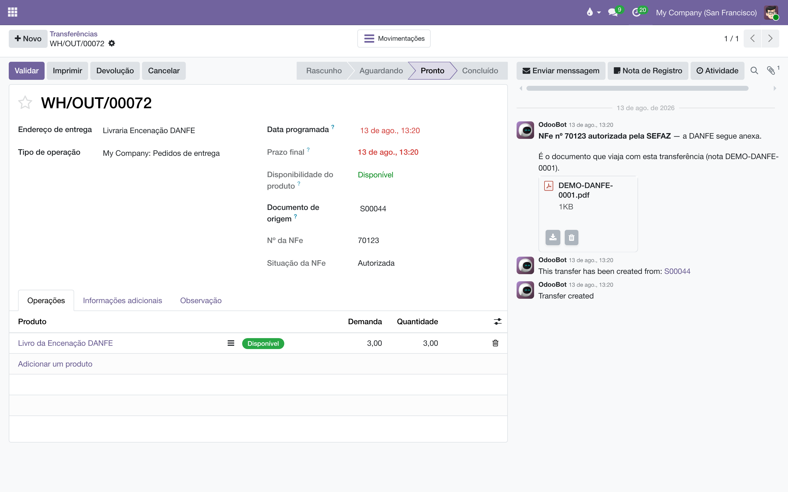
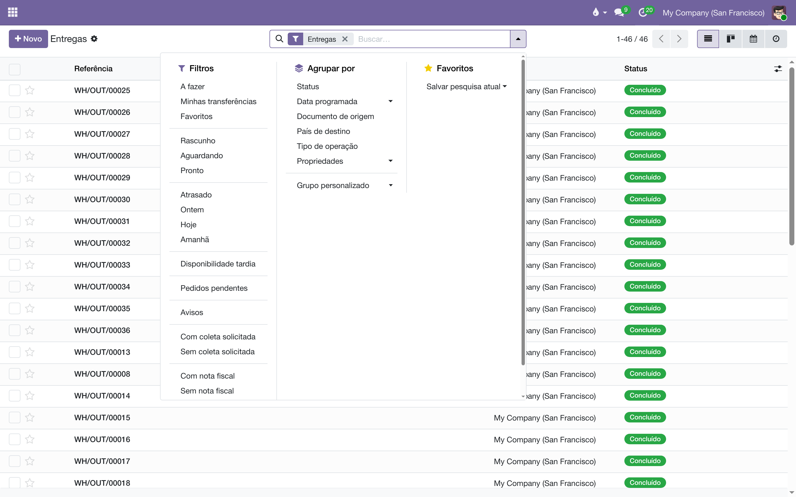
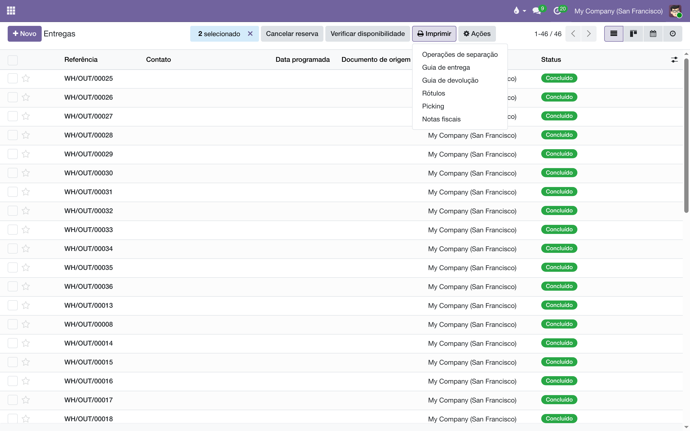

O documento que viaja com a caixa, entregue onde a caixa é fechada: quando a SEFAZ autoriza a NFe, o PDF da DANFE aparece no histórico da própria transferência — a logística não abre o Faturamento.
Quem embala e despacha trabalha na transferência, não na fatura. A nota, porém, nasce do outro lado: é emitida da fatura, pela integração com a Focus NFe. Este módulo é a ponte entre os dois mundos — no momento em que a SEFAZ autoriza a nota, ele leva a DANFE até cada transferência do pedido e carimba o vínculo na ficha. Pela mesma ponte, no sentido contrário, viajam a contagem de caixas e o peso: nascem na movimentação e chegam à fatura, porque a NFe precisa declará-los.
O que a logística ganha, em resumo:
| Na tela | O que aparece |
|---|---|
| Histórico da transferência | O PDF da DANFE, postado quando a SEFAZ autoriza — e um aviso, se a nota for cancelada depois. |
| Ficha da transferência | Nº da NFe e Situação da NFe, ao lado do documento de origem. Só aparecem quando há nota. |
| Lista de transferências | Os filtros Com nota fiscal e Sem nota fiscal. |
| Menu Imprimir da lista | Notas fiscais: as DANFEs da seleção, num PDF só. |
O vínculo não se digita — é deduzido do pedido por trás da nota, por duas pernas, porque a casa emite por dois caminhos:
| Documento | O elo |
|---|---|
Venda (S000) | As linhas da fatura apontam para as linhas do pedido, e o pedido conhece as suas transferências. |
Consignação (C000) e remessa (REM/) | A nota nasce sem linha ligada ao pedido, mas o gerador carimba a origem com o nome do pedido — é por ela que a transferência é encontrada. |
Acerto (CO) | Nenhum. O acerto fatura livro que já está na prateleira do cliente, sem movimento físico — e por isso não passa por aqui, de propósito. |
Uma falha nesta ponte nunca derruba a emissão: a nota já está autorizada na SEFAZ. O aviso à logística se refaz sozinho na próxima consulta da integração — o que não propagou agora propaga depois.
Quando a SEFAZ autoriza, cada transferência do pedido recebe no histórico uma mensagem — "NFe nº 70123 autorizada pela SEFAZ — a DANFE segue anexa" — com o PDF pronto para imprimir. Na ficha, Nº da NFe e Situação da NFe passam a acompanhar a nota: se ela mudar de situação, o campo muda junto.

Se a nota for cancelada depois, o histórico recebe um aviso: a DANFE anexada acima não vale mais como documento de transporte. O PDF não é apagado — histórico não se reescreve — mas também não fica mentindo sozinho no registro. O aviso sai uma vez só.
Na lista de transferências, os filtros Com nota fiscal e Sem nota fiscal dividem a fila da expedição: de um lado o que já tem documento e pode ir para a caixa, do outro o que ainda espera a emissão.


Se a seleção incluir movimento sem nota, nada é impresso: o aviso diz exatamente quais faltam. Barrar a seleção inteira é de propósito — melhor um aviso agora do que metade das DANFEs na bandeja sem ninguém saber qual ficou de fora. E a impressão não exige acesso ao Faturamento: quem pode abrir a transferência recebe a DANFE dela.
Nota autorizada cuja DANFE ainda não baixou da Focus também barra a impressão, com aviso próprio — a próxima consulta da integração traz o PDF, e aí é só imprimir de novo.
A NFe precisa declarar quantos volumes vão e quanto pesam. A caixa quem conta é quem embala, na transferência; o peso o sistema soma do cadastro dos produtos. Este módulo leva os dois até a fatura em dois momentos, com pesos diferentes:
| Momento | O que acontece |
|---|---|
| Confirmar a fatura | O que estiver vazio na aba NFe é preenchido da movimentação. Se ainda faltar caixa ou peso, um aviso fica no histórico — mas a confirmação passa: a caixa pode ser contada depois. |
| Emitir a NFe | Barra. Nota com movimentação física não sai sem volumes e peso bruto — a SEFAZ recusa, e a transportadora confere na coleta. |
Só o que está vazio é preenchido — vazio, não diferente. Quem fatura confere a caixa fechada na bancada e é a última palavra: um número digitado nunca é sobrescrito pela soma calculada. Para trazer os números da movimentação por cima do que houver, existe o botão Trazer da movimentação, na aba NFe da fatura — aí a decisão é de quem clicou.
Pela mesma cascata descem o frete e a transportadora: a Modalidade do frete se negocia no pedido (ao lado da posição fiscal), vem preenchida do cadastro do cliente e, vazia, sai no padrão da casa — CIF, o remetente contrata. A transportadora vem do método de entrega da transferência. O acerto, que não move caixa nenhuma, sai sem ocorrência de transporte.
Validei a transferência e não há DANFE no histórico.
A DANFE só chega quando a SEFAZ autoriza a nota — a validação do movimento não emite nada. O filtro Sem nota fiscal lista tudo o que ainda espera emissão.
A nota foi cancelada. Preciso apagar o PDF?
Não. O aviso de cancelamento já ficou no histórico, logo abaixo do anexo, dizendo que aquela DANFE não vale mais como documento de transporte. Apagar o PDF seria reescrever o registro.
O acerto de consignação não aparece em nenhuma transferência.
Certo: o acerto fatura sem movimento físico — os livros já estão na prateleira do cliente. Não há caixa para despachar, logo não há DANFE a levar para a logística.